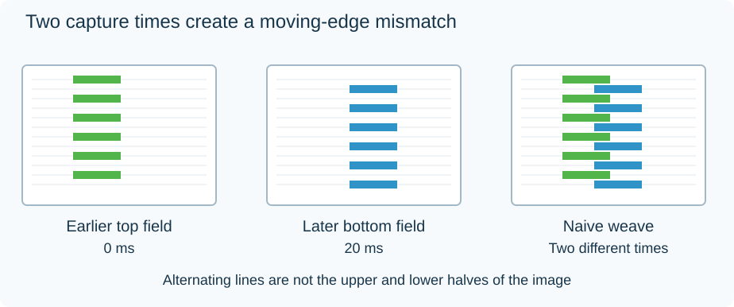

Interlaced Video
Interlaced video alternates between two sets of picture lines, called fields. One field contains the top set of alternating lines; the other contains the bottom set. In native interlaced capture, they describe successive moments rather than one shared picture time.
That is why weaving two moving fields together can reveal comb-like edges. An object has moved between captures, so its position differs on alternating lines.

Original schematic with a reduced line count. Green lines belong to the earlier top field and blue lines to the later bottom field; their horizontal positions differ because the object moved.
| Interlaced timing | Field times per second | Pairs of fields per second |
|---|---|---|
| 50-field/s system | 50 | 25 |
| 60000/1001-field/s system | About 59.94 | About 29.97 |
A label such as “1080i50” commonly counts fields. A media inspector may instead report the pair rate as 25 fps. These can describe the same stream, so check the convention before deciding that half the motion is missing.
Preserve the motion, not just the height
Modern flat-panel presentation uses complete pictures. Deinterlacing reconstructs them from the fields. Producing one output picture per field can preserve the source's 50 or 59.94 motion samples per second; producing one per pair usually retains fewer temporal samples.
For an Emby library containing broadcast recordings, the source scan type and field order help explain combing, jitter, or unexpectedly less fluid motion after processing. Correct delivery alone cannot repair an incorrect interpretation of the fields.
Not every interlace-marked file contains native interlaced capture. Telecine can distribute progressive film pictures across fields, and progressive segmented frame transport is another distinct case. Choosing the right reconstruction depends on what the fields actually represent.